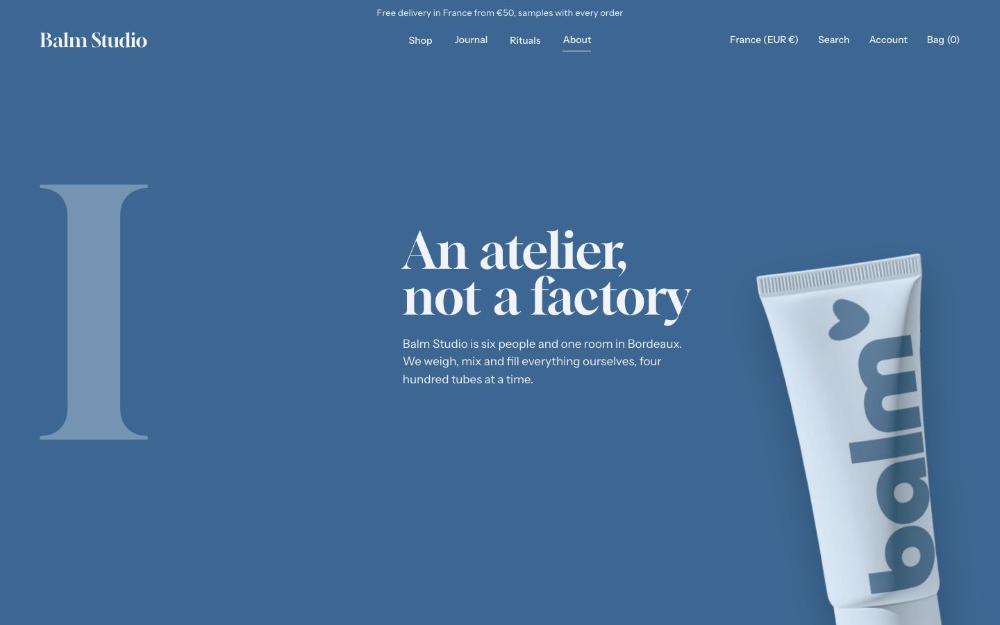
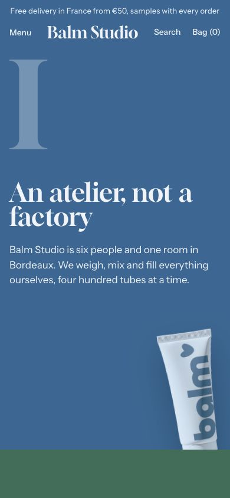

Chapters
Your story in chapters, each on the color of the product it led to.
WhereAny template. Not available in the header or footer group.


What it is for
The About page of the demo: three chapters, each a full screen with a numeral, a heading, a text and a product.
How it works
Each Chapter block has a Numeral, a Heading, a Text, a Product (its cutout leans in the corner when Show the product is on) and an optional link. The chapter is painted in the color of its product. Tint the page with the first chapter gives the whole page, header and footer included, the color of the first chapter.
Content tips
- Roman numerals read well at this size: I, II, III.
- Keep each text to two sentences.
Settings
Section settings (3)
| Setting | Values | Default | Notes |
|---|---|---|---|
| Breadcrumbs on this page |
| Hide | Overrides Theme settings for this page only. Position and separator stay global. |
| Tint the page with the first chapter | Checkbox | On | The page, its header and its footer take the colors of the first chapter's product. |
| Chapter height (desktop) | 50 to 100 svh, step 5 | 100 svh |
Block: Chapter
Chapter block settings (7)
| Setting | Values | Default | Notes |
|---|---|---|---|
| Numeral | Text | I | |
| Heading | Text | Name this chapter | |
| Text | Rich text | Tell one part of your story in two or three sentences. | |
| Product | Product | Empty | Its colors and its cutout dress the chapter: custom.background_color, custom.background_color_end and custom.cutout. |
| Show the product | Checkbox | On | |
| Button label | Text | Empty | |
| Link | Link | Empty |